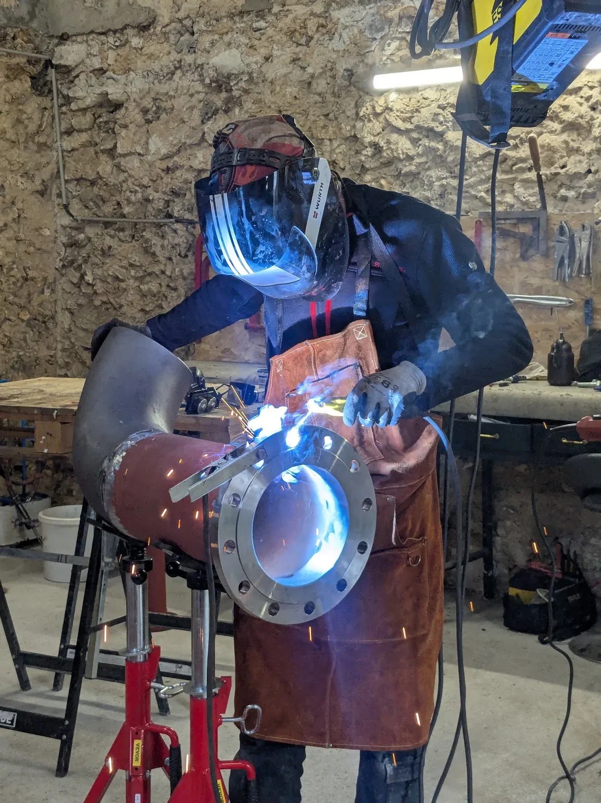

Chaque année, des milliers d'entreprises, de collectivités et de particuliers se lancent dans des travaux sans avoir suffisamment préparé la phase d'étude. Résultat : des dépassements de budget, des retards, des malfaçons, des contentieux... et parfois des travaux à refaire entièrement. Consulter un expert technique avant de démarrer vos travaux n'est pas un luxe : c'est un investissement rentable qui vous protège et vous permet de prendre les meilleures décisions.

Les erreurs les plus coûteuses surviennent en phase d'étude
Il est communément admis dans le secteur du BTP que les erreurs détectées en phase d'étude coûtent 10 à 100 fois moins cher à corriger que celles détectées en phase de chantier ou, pire, après la livraison. Pourtant, nombreux sont les maîtres d'ouvrage qui font l'économie d'une étude sérieuse pour démarrer plus vite... et qui le regrettent.
Voici les problèmes les plus fréquents que l'on rencontre faute d'une étude préalable sérieuse :
- Incompatibilité technique entre les différents lots : un déplacement d'évacuation non anticipé qui oblige à revoir le planning complet
- Non-conformité réglementaire : des travaux qui ne respectent pas les normes en vigueur, entraînant des refus de réception ou des reprises obligatoires
- Mauvais dimensionnement d'un réseau de tuyauterie, d'une installation électrique ou d'une ventilation
- Sujétions non prévues découvertes en cours de chantier (amiante, réseaux encastrés, structure dégradée)
- Sous-estimation budgétaire par manque d'analyse des contraintes réelles du site
Ce qu'apporte un expert technique avant vos travaux
1. Un regard neutre et indépendant
Un expert indépendant comme JOFAGIST n'a pas d'intérêt commercial à vous faire réaliser des travaux inutiles. Son rôle est de vous donner la meilleure information technique pour que vous puissiez prendre les meilleures décisions. C'est un rôle fondamentalement différent de celui d'un entrepreneur qui cherche à remporter un marché.
2. L'analyse des contraintes techniques de votre site
Chaque site a ses spécificités. Un expert qualifié saura identifier les contraintes cachées : présence de réseaux existants, état de la structure, accessibilité, compatibilité des matériaux, normes applicables spécifiques à votre activité ou à votre type de bâtiment. Ces éléments doivent être intégrés au projet dès le début, pas découverts en cours de chantier.
3. La rédaction de documents techniques adaptés
Pour obtenir des devis comparables et des prestations conformes à vos attentes, il est indispensable de disposer d'un cahier des charges technique (CCTP) précis. Sans ce document, les prestataires qui vous remettent des offres peuvent interpréter librement votre demande, ce qui rend la comparaison des offres impossible et expose aux litiges.
JOFAGIST vous aide à rédiger ces documents : programmes fonctionnels, CCTP par lot, cahiers des clauses techniques particulières pour les marchés publics.
4. L'analyse et la comparaison des offres reçues
Recevoir trois devis d'artisans ou d'entreprises ne suffit pas si vous n'avez pas les outils pour les comparer objectivement. Un expert technique décode les offres pour vous : identifie les postes sous-estimés, les oublis, les variantes non demandées, les incohérences de prix. Cette analyse évite les mauvaises surprises en cours de chantier.
5. Le suivi de la réalisation
Même avec des plans parfaits et des artisans compétents, les travaux doivent être suivis. L'expert vérifie que les prestations réalisées correspondent aux plans approuvés, aux spécifications techniques et aux normes applicables. Il assiste aux réunions de chantier et consigne ses observations dans des comptes-rendus.

Pour qui est ce service ?
Pour les entreprises industrielles
Extension de site, création d'atelier, modification d'un process, remplacement d'équipements : tout projet industriel comporte des enjeux techniques et réglementaires qu'il vaut mieux évaluer en amont. JOFAGIST apporte son expertise en tuyauterie industrielle et en organisation de chantier pour sécuriser vos projets.
Pour les collectivités
Les maîtres d'ouvrage publics ont des obligations réglementaires spécifiques (code de la commande publique, contrôle technique, coordination SPS). JOFAGIST peut vous assister dans la préparation de vos marchés, la rédaction des pièces techniques et le suivi des travaux, en complément de vos équipes internes.
Pour les particuliers
Vous faites construire ou rénover votre maison et vous ne savez pas si les devis que vous avez reçus sont justes, complets et comparables ? JOFAGIST peut jouer le rôle de conseiller technique indépendant : vérification des devis, recommandations sur les matériaux, suivi de votre chantier si vous le souhaitez.
Le coût d'un expert technique : un investissement, pas une dépense
La question que posent souvent nos clients : "Est-ce que ça vaut vraiment le coût de payer un conseil technique en plus ?" La réponse est presque toujours oui, pour une raison simple : le coût d'un expert représente généralement 1 à 5 % du budget total des travaux, mais peut permettre d'économiser 10 à 30 % sur ce même budget en évitant les erreurs, les reprises et les contentieux.
Et si votre projet est bien conduit dès le départ, vous économisez aussi du temps et du stress — un bénéfice difficile à chiffrer mais bien réel.
Un projet à sécuriser ?
Soumettez-nous votre projet pour une première analyse gratuite. Nous vous répondons sous 48h.
JOFAGIST : votre partenaire conseil en Centre-Val-de-Loire
L'équipe JOFAGIST cumule plus de 15 ans d'expérience terrain dans la tuyauterie industrielle et le bâtiment. Nous ne sommes pas un bureau d'études hors sol : nos conseils sont ancrés dans la réalité des chantiers, et nos recommandations sont toujours pragmatiques et réalistes.
Basés en Centre-Val-de-Loire, nous intervenons dans toute la région pour les missions de conseil sur site, et partout en France pour les missions à distance. Contactez-nous pour discuter de votre projet.